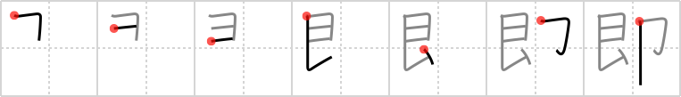

即
← →
instant

Reading:
On-Yomi: ソク — Kun-Yomi: つ.く、つ.ける、すなわ.ち
Heisig story:
Silver . . . stamp.
Koohii stories:
1) [taijuando] 28-6-2006(307): He scratches off the silver stamp and discovers that he is an instant winner.
2) [rgravina] 17-6-2006(137): For instant postal delivery, buy a silver stamp!
3) [Johnnyltn] 26-2-2007(35): Hint: Instant cameras. In photography it only takes an instant for the light to reach the silver nitrate on the film and stamp an image on it.
4) [tristanthorn] 18-3-2009(28): Instant ramen always has silver foil stamped on the top of the cup, as a lid.
5) [blannk] 25-1-2010(17): Forewarned is forearmed: careful 忽 instantaneously (#2431 忽) & 頓 immediate (#2788 頓).